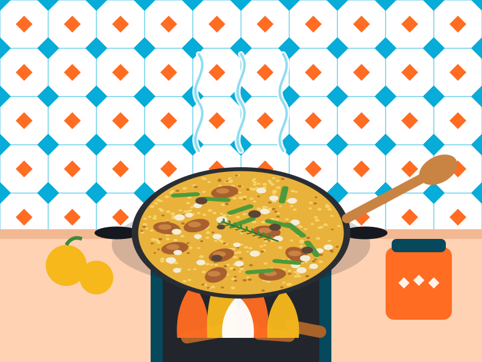
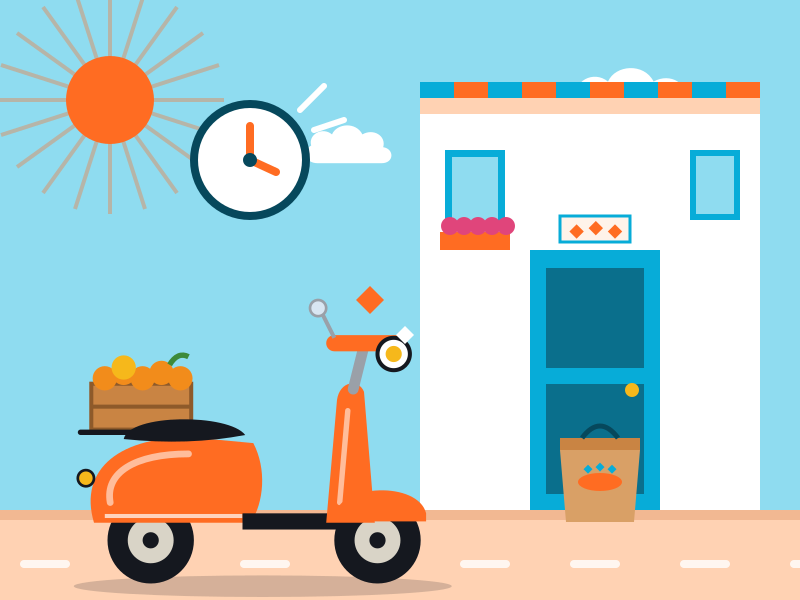

Comida mediterránea a domicilio
del fogón a tu puerta
Cómo funciona
-
Pide
elige tus platos en la carta o llámanos
-

Cocinamos
al momento cada uno de nuestros platillos
-

Llega
a tu puerta en 35–45 min, bien caliente
Del Mediterráneo
te lo llevamos a casa
Solo a domicilio · sin sala ni recogida
Zona de reparto: El Cabanyal, Malva-rosa, Ciutat Vella, Russafa, Benimaclet y alrededores
Pedidos: Mar–Dom · 13:00–16:00 y 20:00–23:30
Entrega: 35–45 min desde que confirmas
Teléfono: 654 34 32 23 · Correo: restaurante@panysal.com